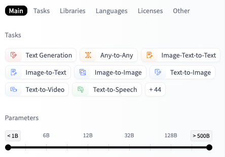

Hugging Face 소개 & 사용법
100만 개 이상의 오픈소스 AI 사전학습 모델과 데이터셋을 공유하는 최대 오픈소스 ML 생태계의 구성 요소, 모델 탐색 필터 및 Naming Convention 규칙을 완벽하게 다룬다.
1. Hugging Face 생태계 & 모델 허브 개요
⚡
Hugging Face 플랫폼 가치 및 주요 서비스
Hugging Face는 전 세계 AI 엔지니어들이 100만 개 이상의 오픈소스 사전학습 모델(Pre-trained Models)과 데이터셋을 공유하는 최대 머신러닝 커뮤니티이자 플랫폼이다.
비전(Vision), 자연어 처리(NLP), 오디오 등 다양한 분야의 최첨단 AI 모델을 코드 단 몇 줄로 즉시 로드하고 실행하는 파이프라인 API를 제공한다.
💡 플랫폼 핵심 제공 서비스 4종
📦 Models
다양한 도메인의 오픈소스 사전학습 AI 가중치를 공유하고 손쉽게 다운로드받는 모델 허브
📊 Datasets
정형/비정형 텍스트, 이미지, 음성 등 모델 학습 및 벤치마크 평가용 대규모 데이터셋 보관소
🚀 Spaces
Gradio 또는 Streamlit으로 AI 동작 데모 웹 앱을 무료로 빠르게 배포하고 공유하는 플랫폼
🪣 Buckets NEW
머신러닝 워크플로우에 최적화된 대용량 원본 파일 및 ML 에셋 저장소
Hugging Face의 핵심 가치
독자적으로 방대한 컴퓨팅 리소스를 들여 거대 비전/언어 모델을 직접 사전학습시킬 필요 없이, 검증된 가중치(Weights)와 아키텍처 설정을 허브로부터 API 기반으로 즉시 호출하여 **전이학습(Transfer Learning)** 및 추론을 수행하도록 지원한다.
2. 허깅페이스 모델 탐색 및 명명 규칙
🔍
모델 검색, Naming Conventions & 핵심 검토 항목
🗂️ 1. 다차원 모델 검색 시스템 (Task & Filter)
허깅페이스는 다양한 기준에 따라 최적의 모델을 쉽고 빠르게 찾을 수 있도록 강력한 검색 및 필터링 시스템을 제공한다.
- Computer Vision:
Image Classification(이미지 분류),Object Detection(사물 검출),Text-to-Image(텍스트 기반 이미지 생성 - 예: SANA) - Natural Language Processing (NLP):
Text Generation(텍스트 생성),Translation(기계 번역),Question Answering(질의응답) - Multimodal:
Zero-Shot Image Classification(텍스트-이미지 매칭 - 예: CLIP),Image-to-Text
💡 실무 팁: 허깅페이스 좌측 패널에서 검색 조건을 조합하면 서비스 요구사항 및 로컬 하드웨어(GPU VRAM) 리소스에 정확히 부합하는 모델을 즉시 스크리닝할 수 있다.

📛 2. 리포지토리 ID 명명 규칙 (Naming Conventions)
허깅페이스의 사전학습 모델은
네임스페이스/모델명 포맷의 고유한 리포지토리 ID (Repository ID)를 갖는다. 모델명 내부에는 크기, 용도, 학습 방식 등의 정보가 접미사(Suffix) 형태로 조합된다.
| 구분 | 설명 및 의미 | 주요 태그 및 접미사 예시 |
|---|---|---|
| 리포지토리 ID | 네임스페이스와 모델명을 결합한 고유 식별 주소 | namespace/model_name |
| 네임스페이스 | 모델 배포 조직 또는 작성자 계정명 | meta-llama, google, openai |
| 모델 크기 | 모델의 매개변수(파라미터) 총규모 | 7B, 8B, 70B |
| 용도 및 목적 | 기본 모델(Base) 및 지시수행(Instruct) 구분 | -Base, -Instruct, -Chat |
| 학습 기법 | 지도학습 및 강화학습 파인튜닝 방식 | -SFT, -DPO, -RLHF |
| 양자화 포맷 | 로컬 구동용 경량 압축 포맷 | -GGUF, -GPTQ, -AWQ |
📌 실제 리포지토리 ID 분석 예시 (Meta-Llama-3-8B-Instruct)
meta-llama
/
Meta-Llama-3
-
8B
-
Instruct
🏷️ 8B, 70B (매개변수 크기)
가중치 규모 표시 (숫자가 클수록 높은 성능과 무거운 VRAM 요구)
🎯 -Base, -Instruct, -Chat
기본형(
-Base) 또는 대화/정렬 튜닝(-Instruct, -DPO) 표기⚙️ -GGUF, -GPTQ, -AWQ
로컬 저사양 환경 동작을 위해 소수점 정밀도를 압축한 양자화 포맷 표기
📑 3. 모델 상세 정보 핵심 검토 항목 (Model Card & Metadata)
허깅페이스 개별 모델 저장소 메인 화면과 탭 리소스에서 서비스 도입 검토 및 실무 연동을 위해 반드시 점검해야 할 핵심 3대 구성 영역이다.
1. 📄 메인 README (Model Card)
모델의 공식 소개서이다. 모델 개발사, 학습 메커니즘, 평가 성능(Benchmark) 점수를 확인한다. 특히 코드 구현 시 즉시 테스트해 볼 수 있는 실행 가능한 예제 코드(Usage Code)의 유무를 필히 검증한다.
2. 📂 Files and versions 탭 (가중치 및 아키텍처 설정)
가중치 파일 보관소이자 실제 프로그래밍 시 코드 레벨에서 반드시 참조해야 하는 메타데이터 설정 파일들이 위치하는 핵심 공간이다.
- 가중치 본체 (
.safetensors): 해킹(악성 코드 실행) 위험이 없고 컴퓨터 메모리로 로드하는 속도도 훨씬 빠른 최신 표준 가중치 파일 형태 - 모델 상세 설정 (
config.json): 모델 아키텍처 상세 사양이다. Linear Probing(선형 분류기 추가 학습) 시 백본의 최종 출력 피처 차원(Hidden Dimension) 크기를 직접 확인하여 새로운 선형 레이어 차원을 설계하는 기준이 된다.
💡
preprocessor_config.json, tokenizer.json 등 그 외 설정 파일은 개발자가 직접 열어볼 필요 없이, 라이브러리(Auto 클래스)가 실행 시 내부적으로 알아서 자동 로드하여 처리한다.
3. 💬 Community & Spaces 탭 (생태계 피드백 및 데모)
저장소 상단의 서브 탭 요소이다. Community 탭의 토론 스레드 및 PR에서 잠재적 오류를 모니터링하고, Spaces 탭에서 실행 중인 Gradio 라이브 데모 웹 앱을 통해 코딩 작업 전 실제 모델 성능을 검증한다.